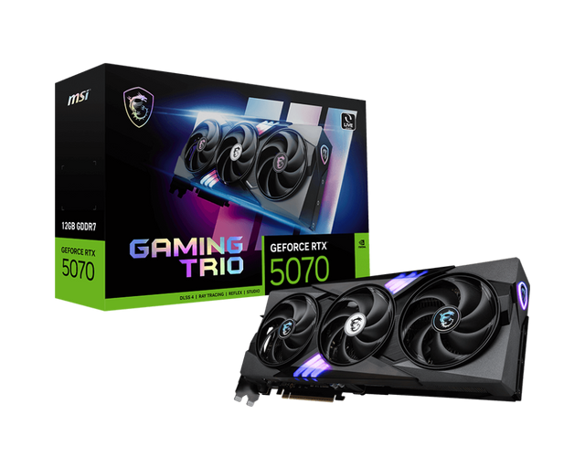
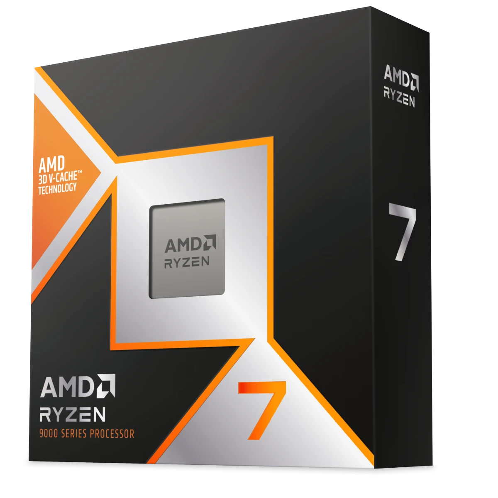

THE BUILD EDIT인터랙티브 데모실제 제품을 담은 비교용 카탈로그입니다. 가격과 FPS는 시연용이며 실시간 최저가·실측 성능과 다릅니다. 구형 제품은 판매가 종료되었을 수 있습니다.
01
부품 둘러보기
※ 제조사·판매처의 실제 제품 사진입니다. 메모리는 시리즈 대표 사진이며 용량·구성에 따라 외형이 다를 수 있습니다.
02
사양 기반 참고 평가전체 성능 확인
주요 사양과 활용 범위를 확인하세요.
게임 성능 확인해상도·화질별 예시 FPS 보기
FPS는 시연용 계산값이며 실측 벤치마크가 아닙니다. 레이트레이싱·업스케일링·프레임 생성 미적용 가정. 드라이버·게임 버전·발열에 따라 실제 성능은 달라집니다.
전체 평가는 주요 사양을 바탕으로 한 참고용입니다. 실제 작업 속도는 프로그램, 파일 크기, 냉각 환경에 따라 달라집니다. 구매 전 BIOS·CPU 쿨러·전원 커넥터를 추가 확인하세요.